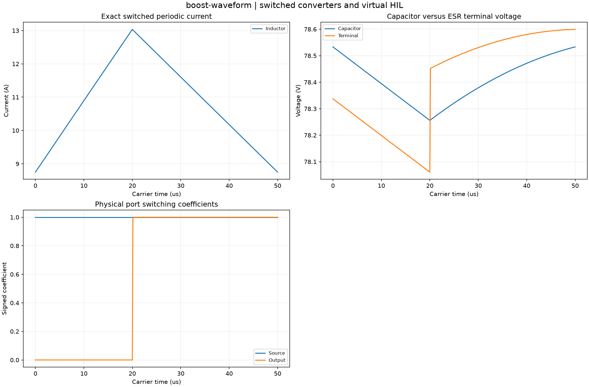

Reproducible switched converters and virtual HIL. Units and field components are printed on the scientific axes. peak d-q quantities use exp(+i omega t); terminal currents point into the protected line.
Sealed numeric archive | Summary CSV | Physical parameters | Run request | Source and environment

| capacitor_ripple_v | 0.2773013127282553 |
|---|---|
| current_ripple_a | 4.284401172999061 |
| input_w | 522.8138300517861 |
| loss_w | 10.490188116606598 |
| output_w | 512.3236419351816 |
| periodic_state_error | 1.4210854715202004e-14 |
These are simulations, not hardware measurements. Network-model, measurement, timing and statistical uncertainty require distinct convergence checks. Singular or unilluminated data use explicit masks.
Source revision: e37760b740c42b9052fd24c1a442a5d305f0001f.
Dirty checkout: False.
Configuration SHA-256: 0f11e32b77fca3b49898d7739ac8b15686ea0dbb02c91453cbbc5a157d39fda0.
Replay preserves original source and parameter provenance. SHA-256 manifests detect changed bytes; they are unsigned integrity records, not certificates of physical validity.